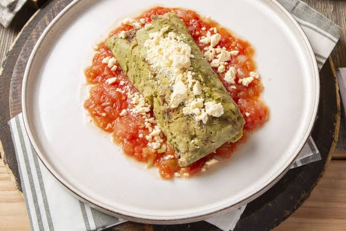

5.Chiapas

- Platillo: Tamales de chipilín
- Ingredientes: Masa de maíz, hojas de chipilín, manteca, sal, a veces queso o carne.
- Historia: El chipilín es una planta silvestre nativa de la región, usada desde tiempos prehispánicos.
- Dato curioso: Son parte infaltable en fiestas y reuniones familiares.